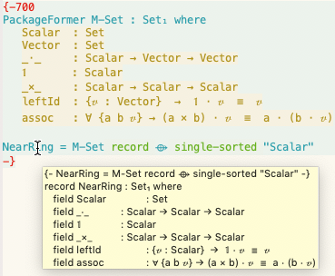

? for Help ⟫
Library Design
⇒ Reusability Aim
⇒ Substantial Generality
When creating a record to bundle up certain information that “naturally” belongs together, what parts of that record should be parameters and what parts should be fields?
Structures are meaninglessly parameterized from a mathematical perspective. […] I think of the parametric versus bundled variants as analogous to currying or not; are the arguments to a function presented in succession or as a single ordered tuple? However, there is a big difference between currying functions and currying structures. Switching between curried and uncurried functions is cheap, but it is nearly impossible in Lean to curry a structure. That is, what is bundled cannot be later opened up as a parameter. (Going the other direction towards increased bundling of structures is easily achieved with sigma types.) This means that library designers are forced to take a conservative approach and expose as a parameter anything that any user might reasonably want exposed, because once it is bundled, it is not coming back.
—Tom Hales
| This is the problem we are solving! |
All and Any of Booldata Bool = False | True
newtype All = All { getAll :: Bool }
newtype Any = Any { getAny :: Bool }
Only defined for the purpose of being able to attach the respective monoid instances to them
For the monoid example, it seems that there are three contenders for the monoid interface.
record Monoid₀ : Set₁ where
field
Carrier : Set
_⨾_ : Carrier → Carrier → Carrier
Id : Carrier
assoc : ∀ {x y z}
→ (x ⨾ y) ⨾ z ≡ x ⨾ (y ⨾ z)
leftId : ∀ {x} → Id ⨾ x ≡ x
rightId : ∀ {x} → x ⨾ Id ≡ x
Use-case: The category of monoids.
record Monoid₁ (Carrier : Set) : Set where
field
_⨾_ : Carrier → Carrier → Carrier
Id : Carrier
assoc : ∀ {x y z}
→ (x ⨾ y) ⨾ z ≡ x ⨾ (y ⨾ z)
leftId : ∀ {x} → Id ⨾ x ≡ x
rightId : ∀ {x} → x ⨾ Id ≡ x
Use-case: Sharing the carrier type.
record Monoid₂
(Carrier : Set)
(_⨾_ : Carrier → Carrier → Carrier)
: Set where
field
Id : Carrier
assoc : ∀ {x y z}
→ (x ⨾ y) ⨾ z ≡ x ⨾ (y ⨾ z)
leftId : ∀ {x} → Id ⨾ x ≡ x
rightId : ∀ {x} → x ⨾ Id ≡ x
Use-case: This solves Haskell's problem of making contrived datatypes for the sake of attaching instances to them.
A monoid is an interpretation mapping from terms.
data Monoid₃ : Set where
_⨾_ : Monoid₃ → Monoid₃ → Monoid₃
Id : Monoid₃
This desire for reusability motivates a new language feature: The PackageFormer.
PackageFormer MonoidP : Set₁ where
Carrier : Set
_⨾_ : Carrier → Carrier → Carrier
Id : Carrier
assoc : ∀ {x y z}
→ (x ⨾ y) ⨾ z ≡ x ⨾ (y ⨾ z)
leftId : ∀ {x} → Id ⨾ x ≡ x
rightId : ∀ {x} → x ⨾ Id ≡ x
We declare a PackageFormer then instantiate it using directives:
id : Variational
record : Variational
typeclass : Variational
termtype : String → Variational
unbundled : ℕ → Variational
exposing : List Name → Variational
_⟴_ : Variational
→ Variational → Variational
We may write any instantiation as a sequence of ⟴-separated clauses:
PF ⟴ 𝓋₁ ⟴ 𝓋₂ ⟴ ⋯ ⟴ 𝓋ₙ
recordMonoid₀′ = MonoidP record Monoid₁′ = MonoidP record ⟴ unbundled 1 Monoid₁″ = Monoid₀′ exposing (Carrier) Monoid₂″ = Monoid₀′ exposing (Carrier; _⨾_)
data
Monoid₃′ = MonoidP termtype "Carrier"
Monoid₄ = MonoidP
termtype-with-variables "Carrier"
{- ≅
data Monoid₄ (Vars : Set) : Set where
inj : Vars → Monoid₄ Vars
_⨾_ : Monoid₄ Vars
→ Monoid₄ Vars → Monoid₄ Vars
Id : Monoid₄ Vars
-}
Monoid₀ to Monoid₄, spanned 32
lines
MonoidP and our operators, this can be done in 7 + 6 = 13 lines. concat₀ : {M : Monoid₀}
→ let C = Monoid₀.Carrier M
in List C → C
concat₁ : {C : Set} {M : Monoid₁ C}
→ List C → C
concat₂ : {C : Set} {_⨾_ : C → C→ C}
{M : Monoid₂ C _⨾_}
→ List C → C
concat₃ : let C = Monoid₃
in List C → C
PackageFormer MonoidP : Set₁ where
⋮
concat : List Carrier → Carrier
concat = foldr _⨾_ Id
The variationals is where this power comes from!
\[Variational \\ \quad ≅ \quad (PackageFormer → PackageFormer)\]
We have implemented our system as an “editor tactic” meta-program.

PackageFormer within a minimal type theory.Our resulting system has turned hand-written instances of structuring schemes from a design pattern into full-fledged library methods.
Paraphrasing the “Deriving Via” group,
we believe that PackageFormer's have the potential to dramatically change the way we write instances
of structuring mechanisms, as it encourages giving names and documentation to recurring patterns
and reusing them where needed.
Full code scripts may be found on the prototype's repository; below are snippets for the presented fragments.
open import Data.List hiding (concat)
open import Relation.Binary.PropositionalEquality
using (_≡_)
module gpce19 where
open import gpce19-generated
The import of the generated file is automatically produced and inserted by the system, if need be.
MonoidP PackageFormer{-700
PackageFormer MonoidP : Set₁ where
Carrier : Set
_⨾_ : Carrier → Carrier → Carrier
Id : Carrier
assoc : ∀ {x y z} → (x ⨾ y) ⨾ z ≡ x ⨾ (y ⨾ z)
leftId : ∀ {x : Carrier} → Id ⨾ x ≡ x
rightId : ∀ {x : Carrier} → x ⨾ Id ≡ x
-}
record and 3 Instantiations
In the paper proper we mentioned “unbundled”, which in the prototype
takes the form of the meta-primitive :waist.
{-lisp
(𝒱 record
= "Reify a variational as an Agda “record”.
Elements with equations are construed as
derivatives of fields ---the elements
without any equations.
"
:kind record
:alter-elements
(λ es → (--map (map-qualifier
(λ _ → (unless (element-equations it)
"field")) it) es)))
-}
recordNotice that the organisational mechanism not only has a name and documentation, but also an unambiguous implementation. We may use it as follows.
{-700
Monoid₀′ = MonoidP record
Monoid₁″ = MonoidP record ⟴ :waist 1
Monoid₂″ = MonoidP record ⟴ :waist 2
-}
termtype Variationals
We may also have shorter variational definitions directly in 700-blocks.
{-700
𝒱-termtype carrier = ⋯
𝒱-termtype-with-variables carrier = ⋯
Monoid₃′ = MonoidP termtype "Carrier"
Monoid₄ = MonoidP termtype-with-variables "Carrier"
-}
{-700
PackageFormer MonoidPE : Set₁ where
-- A few declarations
Carrier : Set
_⨾_ : Carrier → Carrier → Carrier
Id : Carrier
assoc : ∀ {x y z} → (x ⨾ y) ⨾ z ≡ x ⨾ (y ⨾ z)
-- A few declarations with equations
Rid : Carrier → Carrier
Rid x = x ⨾ Id
concat : List Carrier → Carrier
concat = foldr _⨾_ Id
-- More declarations
leftId : ∀ {x : Carrier} → Id ⨾ x ≡ x
rightId : ∀ {x : Carrier} → Rid x ≡ x
-}
concat₀ and concat₃{-700
𝒱-decorated by = ⋯
Monoid⁰ = MonoidPE decorated "⁰" ⟴ record
Monoid³ = MonoidPE ⟴ decorated "³"
⟴ termtype "Carrier³"
-}
Then, concatenation over an arbitrary monoid:
concat₀ : {M : Monoid⁰}
→ let C = Monoid⁰.Carrier⁰ M
in List C → C
concat₀ {M} = Monoid⁰.concat⁰ M
As well as, concatenation over an arbitrary closed monoid term:
concat₃ : let C = Monoid³
in List C → C
concat₃ = concat³
Questions?